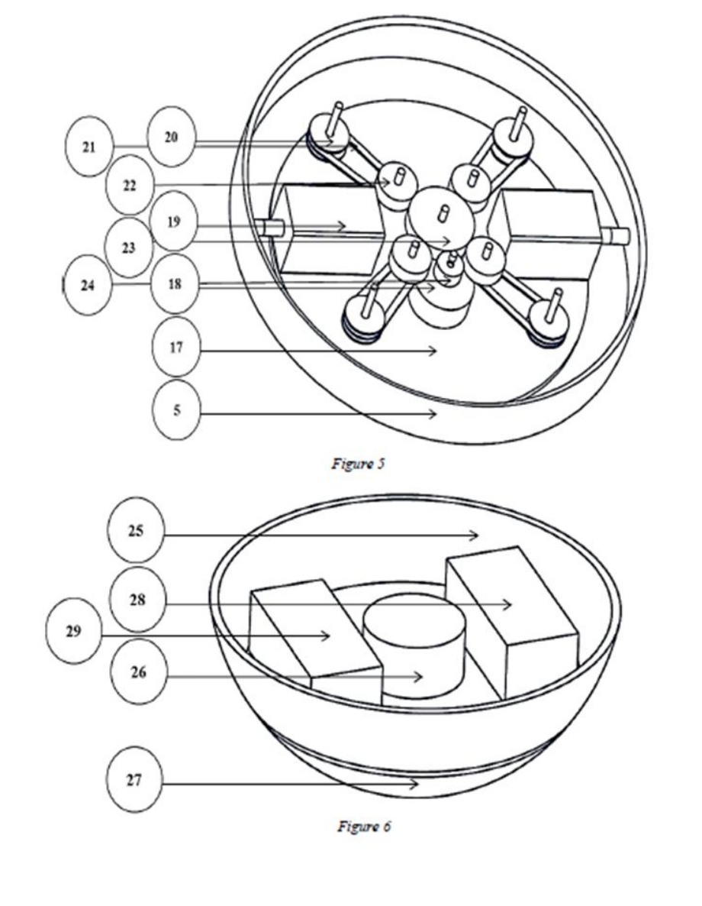
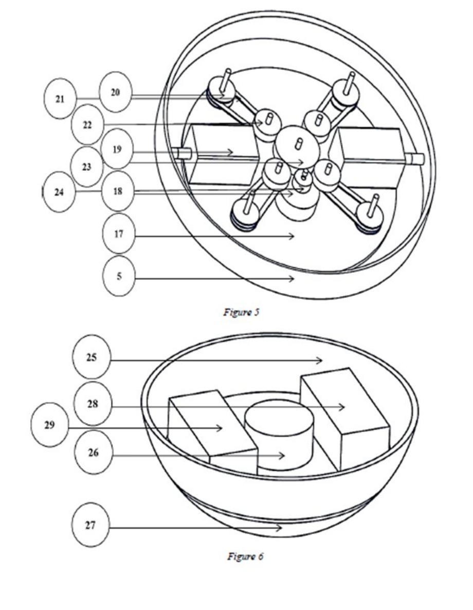
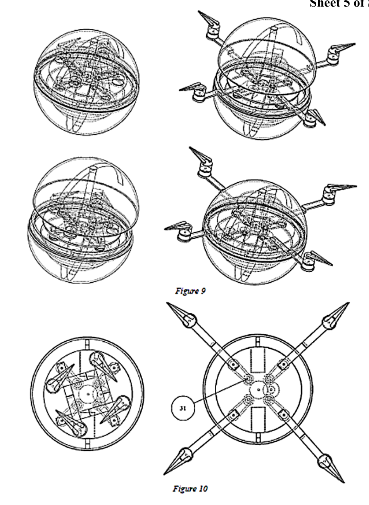
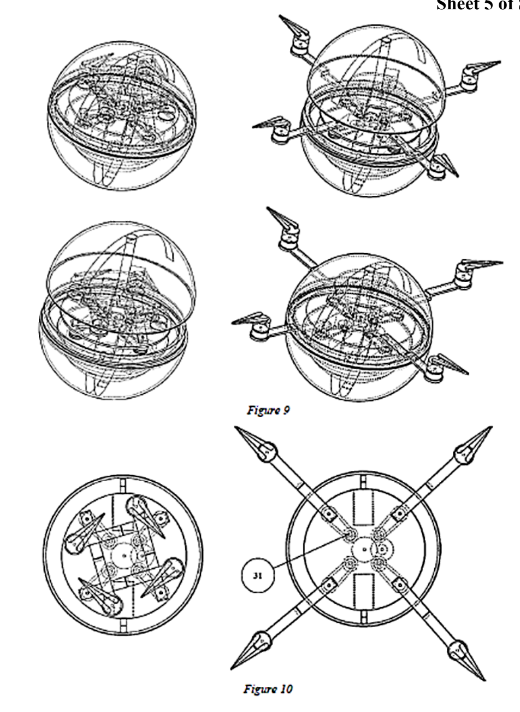

Introduction:Many difficulties are faced in defence and research sector due to a lack of proper system which can search, detect, and examine issues. These problems become more complicated when they are spread across multiple dimensions. In defence sector, accurate reconnaissance mission demands a system that has a capability of manoeuvring in all the three dimensions (land, water and air). Similarly, in research fields such as archaeology, mapping, surveillance etc. also needs the system to research in different terrains. To solve these problems, we are proposing a robot with competence of movement on land, water surface and in air. This patent primarily details the designs of the mechanisms which are used to carry out the above-mentioned operations. Secondarily, this patent describes electronics. All the electronic components used are standard parts. The major contribution of this patent is the novel mechanisms which allow the robot to perform motion in multiple media. The design we are proposing is a holonomic system made up of a spherical shell which consists of all the components which are necessary for motion, mechanism which are crucial for the actuation of motion giving elements. In addition to that the invention also consists of the parts which are essential for the purpose of surveillance and used for applications where robots with capability of motion in multiple terrain is required such as narrow caves, high altitude etc. This multi terrain robot surpasses the conventionally used robots by employing different mechanisms. The development of multi-terrain robot is increasing rapidly nowadays for applications in various fields such as in military use which includes surveillance, mine detection, and sometimes used also as a weapon. Along with that the application in the fields of space and planetary exploration such as in the testing and detection of soil and the environment of planets, sample collection has necessitated the use of such multi-terrain robot. Primitively researchers have focussed on the design of robots having wheels for mobility, but wheeled robots have difficulties in traversing through rough terrains, incapability of collecting information about underwater activities and the design and material constraints such as heat, chemicals etc which may damage the material of the wheels. Drone surveillance is used to gain intelligence against enemy targets by government agencies and against business competitors for high-level competitive intelligence (CI) gathering. Other applications of drone surveillance include law enforcement, private investigation, spying, disaster recovery, search and rescue, drone journalism, photography, Lidar surveys and military reconnaissance. In the case of military operations, surveillance drones may also be weaponized.
Technical Description:The present invention provides a spherical holonomic morphology that is formed by the integration of mechanisms for mobility on various terrains and efficient surveillance. The organization of the apparatus can be divided into several different modules: The primary modules such as the land module, the flight module, water module, and surveillance module along with all the secondary modules necessary for the functioning of the primary modules. The spherical shell of the apparatus is transparent allowing for the perception of the surroundings using inbuilt cameras. The main advantage of spherical geometry is it is free from non-holonomic constraints. The land module consists of two submodules, which controls the movement and the rotational freedom of the robot. For linear motion, present invention proposed a mechanism that comprises of arms contacting the inner surface of the sphere. These arms are connected on the shafts of the motors that are further mounted on the supporting plate. A third motor is mounted on other supporting plate. The rotational module motor coincides with the vertical axis of the plate. The rotational module motor consists of a momentum wheel. The reaction of this momentum wheel provides for the change in the angular orientation of the robot and thereby would be helpful in maneuvering the robot in various directions. The flight module consisting of four Brushless Direct Current (BLDC) motors with a gearbox mounted on it. Foldable propeller are mounted on the output shaft of the gearbox. The function of the gearbox is to open the folded propeller during the flight mode and closing it during motion or floating mode. Non-folding propellers occupy more space in the robot assembly thereby decreasing the compactness of the robot; foldable propellers occupy half the space making the robot more compact. The motors are mounted on links that are connected to an actuator using a gear train. These links open and move out of the robot as the upper hemisphere is raised which is possible using a rack and pinion mechanism. The robot would remain floating on the water surface due to the buoyancy. The land motion module would let the robot move on water surface.
Technical Description:1 and 2 indicates the upper and the lower spherical shell which forms the outer body of the robot. This spherical morphology provides a holonomic freedom to the robot. 3, 4, 5 shows the magnetic ring, guide way and the driver circular ring which forms the part of the driving module. 6 is a magnet attached on the surface of the shell for shell opening and closing mechanism. 7, 8, 9, 10, 11 and 12 are the rack, pinion, Motor 1, Balancing mass, Support plate 1 and hollow cylinder which combined form the mechanism for the opening and closing the shell. 13 and 14 represents the gearbox and brushless DC motor. The gearbox sits on the motor, opens, and closes the propeller. 15 are the links on which 14 is attached. 16, 17 are the support plates which support the mechanisms. 18 is a motor that drives the mechanism that actuates the links of the flight module. 19 is also a motor that drives the sphere on land. 20, 21, 22, 23 and 24 shows gears, belts, pulleys, bearings of the flight module activation mechanism. 25 Show the shell along with a plate on which 26 Motor, 28 Battery and 29 Electronic components rests. 26 is a motor on which 27 the reaction wheel is mounted. A camera 32 located on outer surface of hollow cylinder 12. 33 Foldable propellers are connected to the 13 gearbox output shafts.
Sketches and Schematics:

 

 
